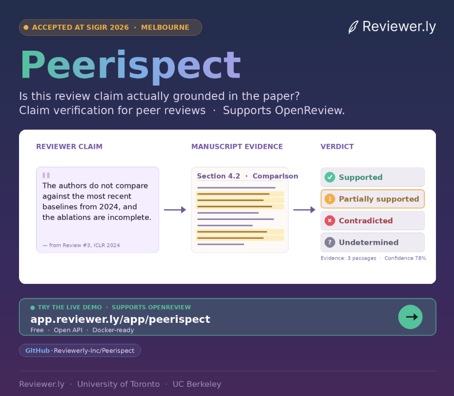

← projects · topic
AI for Peer Review.
Reviewers draft with LLMs, LLMs refine human critiques, and the line between human and machine in scientific peer review is no longer binary. These projects ask better questions about the provenance of reviews and the groundedness of the claims they make.
-
.png)
PeerPrism
Authorship is a continuum — not a yes/no question.
A benchmark for the reality of peer review today: reviewers draft with LLMs, LLMs refine human critiques, and “was this written by AI?” is no longer binary. PeerPrism pulls apart two distinct provenances of a review and asks both questions separately:
- Idea origin — who did the reasoning?
- Text origin — who wrote the words?
We tested 20,690 reviews from ICLR & NeurIPS (2021–2024) across six authorship regimes — human, fully synthetic, and four hybrid modes — generated with GPT-5, Claude-Haiku-4.5, Gemini-2.5, o4-mini, DeepSeek-R1, and Llama-4. We benchmarked seven detectors. On clean human-vs-synthetic, several do well; on rewritten reviews (human ideas, AI words) they disagree wildly, with the same review getting opposite verdicts.
The takeaway: LLM transformations leave a cyborg signature — style becomes machine-like, but reasoning stays human. We need provenance quantification, not binary detectors.
-

Peerispect
Treating every reviewer claim as a retrieval query.
Reviewers make factual claims about a paper all the time — “they don't compare against baseline X,” “they didn't ablate Y.” Are those claims actually grounded in the manuscript? Peerispect checks. Each claim is treated as a retrieval query over the submitted paper, then routed through a modular pipeline: extract → retrieve → verify → label.
- Ingest — parse the PDF into semantic chunks.
- Extract — distill check-worthy claims from reviews.
- Retrieve — find the most relevant manuscript passages.
- Verify — NLI-based labeling with LLMs.
Each claim ends up in one of four buckets: supported, partially supported, contradicted, or undetermined. The output isn't a score — it's an interactive interface that highlights evidence directly in the PDF, so reviewers can sanity-check themselves, authors can respond with receipts, and editors can audit at scale. Every retriever, reranker, and verifier is swappable.